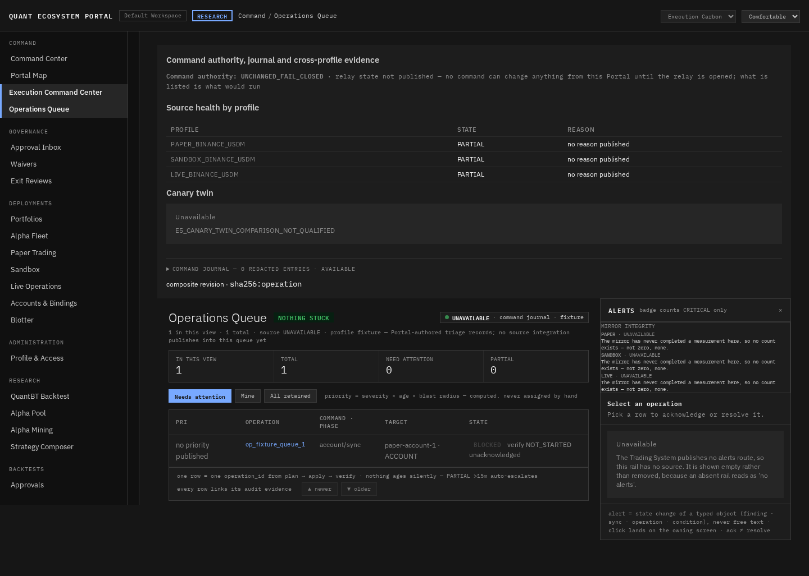
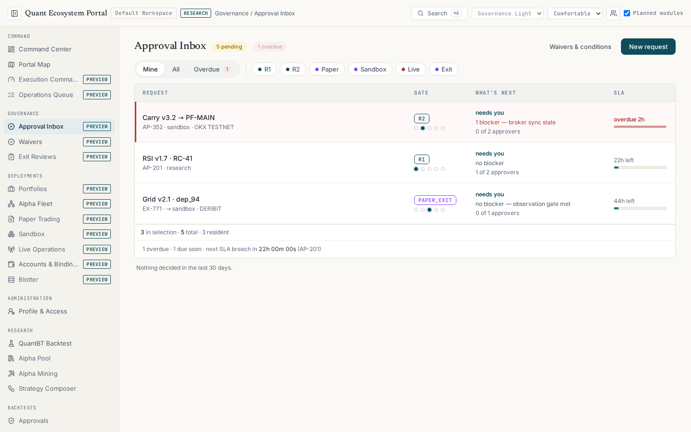

/execution/operations — preview build, 1440px, BFF-double sample data. Switch to “What changes” to see the proposal marked against it.
/governance/approvals — stays its own screen; the proposal only links to it.Operations & Decisions
Fresh · 8sCommand status not qualified Local time · UTC+7USDT · real-funded1Source health 2 of 3 profiles partialNot available 14
| Profile | State | Freshness |
|---|---|---|
| Paper · Binance USD-M | Complete | 9s ago |
| Sandbox · Binance USD-M | Partial | 14m ago · reason not published |
| Live · Binance USD-M | Partial | 14m ago · reason not published |
| Not availableCommand status not qualified | ||
| Time | Target · operation | Three separate facts 5 | Next step | ||
|---|---|---|---|---|---|
| Intent | Receipt | Reconciliation | |||
| Today · 17 Oct 2026 | |||||
| 13:58 | BTC-Trend v3 ARCHIVE Archive request · requested by asmith |
Submitted · awaiting my approval | No receipt yet | Not applicable | Opens the approval; nothing archived yet16 |
| 14:12 | Portfolio Canary ADJUST_TARGET_BUDGET |
Submitted | UNKNOWN | Reconciling | Do not resend7 |
| 14:02 | Root fund SET_ROOT_LIMIT |
Submitted | Applied | Current | Nothing to do |
| 13:55 | Portfolio Satellite RECALL_PARTIAL |
Submitted | Partially applied | Catching up | Applied part is final; display is updating8 |
| 13:41 | BTC-Momentum v2 ARCHIVE |
Submitted | Pending drain | Current | See open obligations |
| 13:20 | Portfolio Core ADJUST_TARGET_BUDGET |
Submitted | Rejected version conflict | Current | Refresh and review a new preview |
| 12:48 | Portfolio Satellite RECALL_FULL |
Preview only6 | No receipt | Not applicable | Nothing was sent |
| 12:10 | Account Binance-02 TOP_UP |
Submitted | Applied | Catching up | Applied; displayed data is still updating |
| Today · 17 Oct 2026 | |||||
| 11:30 | BTC-Trend v3 ARCHIVE |
Submitted · awaiting approval | No receipt yet | Not applicable | Open in Approval Inbox |
| You have 1 request in the last 24H. Fund-level commands are not loaded. | |||||
Key idem_4b19…c2
No receipt seen yet.
Looking up the original request.
Target budget requested: 256,000 → 300,000 USDT · real-funded.
Shown as requested only. Nothing is counted as applied.
| receipt_ref | Not availableNo receipt yet |
| source_event_ref | Not availableNo receipt yet |
| revision | expected r18 · applied Not available |
Checking is read-only. Sending again is blocked until the outcome is known.
Key idem_91d0…7a
Display has seen this revision.
| Root limit | 1,100,000 → 1,200,000 USDT · real-funded |
| Money moved | None |
| Child budgets | Unchanged |
This command carries no amount, so there is no requested / applied / pending split to show.
| receipt_ref | rcpt_7c20d1 |
| source_event_ref | evt_90a1f4 |
| revision | expected r18 · applied r19 |
Key idem_e2c8…5f
Rest waits on existing obligations.
Applied; displayed data is still updating. Do not resend.
| Requested | 40,000.00 |
| = Applied | 25,000.00 |
| + Pending | 15,000.00 |
| + Cancelled | 0.00 |
| + Rejected | 0.00 |
Applied is never reduced by a refresh. Pending is not counted as money that moved.
| receipt_ref | rcpt_5e81b9 |
| source_event_ref | evt_6b02c7 |
| revision | expected r18 · applied r19 |
Nothing is archived until a receipt says so. A manager reviews the request first.
| receipt_ref | Not availableNo receipt yet |
| source_event_ref | Not availableNo receipt yet |
| revision | expected r12 |
Command receipts can't be listed yet 11
We don't know the outcome of any command, so no list and no zero is shown. Do not resend a command because this page is empty.
When available, each row will show
TargetOperationIntentReceiptReconciliationNext step
| Since | Target | Exception | Source | Acknowledge · resolve | |
|---|---|---|---|---|---|
| 14:05 | Account Binance-02 | Unreconciled valuation | Stale 14m | Open account | |
| 13:55 | Portfolio Satellite | Recall not fully released | Partially applied | Open receipt | Not availableNeeds command status |
| 12:20 | Deployment live-0192 | Display behind an applied command | Catching up | ||
No exceptions on your alphas
This is a real empty result for the alphas you own.
| Time | Who | What they did | Target | receipt_ref |
|---|---|---|---|---|
| 14:12 | Stan | Submitted ADJUST_TARGET_BUDGET | Portfolio Canary | Not availableNo receipt yet |
| 14:02 | Stan | Submitted SET_ROOT_LIMIT | Root fund | rcpt_7c20d1 |
| 13:55 | Stan | Submitted RECALL_PARTIAL | Portfolio Satellite | rcpt_5e81b9 |
| 12:48 | Stan | Opened a preview of RECALL_FULL | Portfolio Satellite | Not availablePreview, nothing sent |
Audit entries can't be listed yet
The audit source is not qualified for this environment. Nothing is shown rather than a partial trail.
| Time | Who | What you did | Target | receipt_ref |
|---|---|---|---|---|
| 11:30 | You | Submitted ARCHIVE | BTC-Trend v3 | Not availableNo receipt yet |
What changes vs today — Operations (/execution/operations)
| Region | Today (V1, from the screenshot) | Proposed | Why · needs backend | |
|---|---|---|---|---|
| KEPT | Route, honest “unavailable” behaviour, links to audit evidence and incident detail | Route works; empty things say why (“no zero, none”, “shown empty rather than removed”); “every row links its audit evidence” | Same route; Source not ready keeps saying nothing is known and shows no zero | V1 already does this well; do not regress it. |
| KEPT | Approval Inbox as its own screen | Gate inbox: Mine / All / Overdue, R1 / R2 / Paper / Sandbox / Live / Exit, SLA bars | Not redrawn; an “awaiting approval” command links to it | Governance gates are a different grain from command receipts. |
| CHANGED | Page header | “Operations Queue” with a NOTHING STUCK badge and a source chip “UNAVAILABLE · command journal · fixture” | “Operations & Decisions” with freshness, time range, local timezone and money partition | Time range and partition are needed by the filters and the drawer amounts. |
| CHANGED | Summary tiles | In this view / Total / Need attention / Partial | UNKNOWN outcomes / Pending receipts / Open exceptions | UNKNOWN needs its own number. Needs command status to be qualified. |
| KEPT | Lenses | Needs attention / Mine / All retained | Same three lenses, plus a new “Needs my approval” | Approval lens shows researcher archive requests for managers. |
| NEW | Tabs by row grain, approval rows | No tabs; one queue. Approvals live only in Approval Inbox | Commands / Exceptions / Audit tabs; row type “Archive request · requested by …” that links to the approval | Needs approval requests to carry the requester and target. Capital actions are not started here; the page only tracks receipts. |
| NEW | Filters | None beyond the three lenses; priority is “computed, never assigned by hand” | Operation, Intent, Receipt, Reconciliation and time range; all in the URL | Needs filterable command status fields. |
| CHANGED | Queue table | PRI · OPERATION (op_fixture_queue_1) · COMMAND·PHASE · TARGET · one STATE cell (“BLOCKED verify NOT_STARTED unacknowledged”) | Time · target and operation name · three separate chips (Intent, Receipt, Reconciliation) · next step | Guide §14. Raw operation ids move to the drawer. Assumes one row per command request; V1’s grain is one operation_id from plan to verify, to be confirmed. |
| NEW | UNKNOWN handling and preview rows | No UNKNOWN or preview concept on screen | UNKNOWN → “Check original request”, no resend; “Preview only · No receipt” | Needs receipt lookup by idempotency key. |
| KEPT | Acknowledge / Resolve | Right rail: “Select an operation — pick a row to acknowledge or resolve it” | Acknowledge and Resolve on each exception and in the drawer | Resolve stays disabled until the outcome is known. |
| CHANGED | Right rail / drawer, Alerts rail | Rail beside the table; Alerts rail (mirror integrity, all UNAVAILABLE) | Detail drawer: three facts, effect, receipt_ref, source_event_ref, revision; alerts become the Exceptions tab | Same screen space, richer content. |
| CHANGED | Unavailable banner wording | “Command authority: UNCHANGED_FAIL_CLOSED · relay state not published…” | “Command receipts can’t be listed yet…”; the code moves to a tooltip | Needs the public copy dictionary (FE-015). |
| CHANGED | Source health by profile | Always-open table: three profile codes, all PARTIAL, “no reason published” | Collapsed panel with a header chip; table of profile / state / freshness on expand | Same facts, less noise. |
| CHANGED | Command journal, Canary twin, composite revision | Collapsed journal “0 redacted entries”; “Canary twin · Unavailable”; a sha256 line | Journal becomes the Audit tab; Canary twin is not on this page; revision shows per command in the drawer | Canary twin comparison is not qualified and belongs to the Canary screen. |